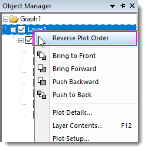

FAQ-145 Wie kann ich die Reihenfolge der gezeichneten Daten in einem Diagrammlayer ändern?
Change-Order-of-Plots
Letztes Update: 12.02.2020
Objektverwaltung
Zeichnungen werden über die Zeichenreihenfolge in der Objektverwaltung aufgeführt. Ziehen Sie in der Objektverwaltung an den Zeichnungen, um sie neu zu ordnen.

Seit Origin 2020b unterstützt die Objektverwaltung das Umkehren der Reihenfolge von Zeichnungen in einem Layer. Klicken Sie mit der rechten Maustaste auf die Layerebene und wählen Sie im Kontextmenü Zeichnungsreihenfolge umkehren.
- 
Layerinhalt
- Klicken Sie doppelt auf das Layersymbol, um den Dialog Layerinhalt zu öffnen.
- Wählen Sie im rechten Feld die Zeichnung aus und klicken Sie auf die Aufwärts- und Abwärts-Pfeile oder ziehen Sie den Zeilenheader, um neu zu ordnen.
- �:

Hinweis
- Für gruppierte Datenzeichnungen müssen Sie ein zweites Mal klicken, um die spezifische Datenzeichnung zu markieren, da das erste Klicken die gesamte Gruppe auswählt.
- Um die Ordnung der Zeichnungen in einem anderen Layer zu wechseln, klicken Sie auf Layer(n) oben rechts und wählen Sie Layer wechseln, um im Weiteren die gewünschte Zeichnung auszuwählen. Wiederholen Sie die Schritte oben, um die Reihenfolge anzupassen.
Diagrammeinstellungen
- Klicken Sie mit der rechten Maustaste auf das Layersymbol und wählen Sie Setup Diagramm.
- Wählen Sie in der Diagrammliste (das untere Bedienfeld des Dialogs) eine Datenzeichnung und verschieben Sie sie durch Ziehen in der Reihenfolge nach oben oder unten.
 |
Bei allen obenstehenden Methoden ist die Reihenfolge der Zeichnungen in der Liste umgekehrt zu der in der Grafik gezeigten. Das heißt, je weiter unten die Zeichnung in der Liste steht, desto weiter oben befindet sie sich in der Grafik. Wenn Sie also eine Zeichnung oben zeigen möchten, verschieben Sie sie im Dialog/Bedienfeld nach ganz unten.
|
Origin-Version mind. erforderlich: 2016 SR0
Schlüsselwörter:Layerinhalt, Dialog Diagrammeinstellungen, Setup Diagramm